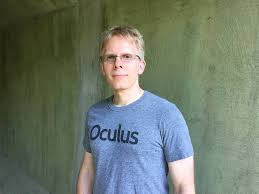
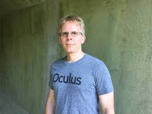

John D. Carmack II[1] (born August 20, 1970)[1] is an American computer programmer and video game developer. He co-founded the video game company id Software and was the lead programmer of its 1990s games Commander Keen, Wolfenstein 3D, Doom, Quake, and their sequels. Carmack made innovations in 3D computer graphics, such as his Carmack's Reverse algorithm for shadow volumes. In 2013, he resigned from id Software to work full-time at Oculus VR as their CTO. In 2019, he reduced his role to Consulting CTO so he could allocate more time toward artificial general intelligence (AGI).[3] https://en.wikipedia.org/wiki/John_Carmack
 

Early life Carmack was born in Shawnee Mission, Kansas,[1] the son of local television news reporter Stan Carmack. He grew up in the Kansas City metropolitan area, where he became interested in computers at an early age. He attended Shawnee Mission East High School in Prairie Village, Kansas and Raytown South High School in nearby Raytown, Missouri.[4] Carmack was introduced to video games with the 1978 shoot 'em up game Space Invaders in the arcades during a summer vacation as a child. The 1980 maze chase arcade game Pac-Man also left a strong impression on him. He cited Nintendo designer Shigeru Miyamoto as the game developer he most admired.[5] As reported in David Kushner's Masters of Doom, when Carmack was 14, he broke into a school to help a group of children steal Apple II computers. To gain entry to the building, Carmack concocted a sticky substance of thermite mixed with Vaseline that melted through the windows. However, an overweight accomplice struggled to get through the hole and instead opened the window, setting off a silent alarm and alerting police. Carmack was arrested and sent for psychiatric evaluation. He was sentenced to a year in a juvenile home.[6][7] He attended the University of Missouri–Kansas City for two semesters before withdrawing to work as a freelance programmer.[8] https://en.wikipedia.org/wiki/John_Carmack
On August 7, 2013, Carmack joined Oculus VR as their CTO.[17] On November 22, 2013, he resigned from id Software to work full-time at Oculus VR.[2][18] Carmack's reason for leaving was that id's parent company ZeniMax Media did not want to support Oculus Rift.[19] Carmack's role at both companies later became central to a ZeniMax lawsuit against Oculus' parent company, Facebook, claiming that Oculus stole ZeniMax's virtual reality intellectual property.[20][21][22] The trial jury absolved Carmack of liability, though Oculus and other corporate officers were held liable for trademark, copyright, and contract violations.[23] Carmack speaking about “The Dawn of Mobile VR” during the Game Developers Conference 2015 In February 2017, Carmack sued ZeniMax, claiming the company had refused to pay him the remaining $22.5 million owed to him from their purchase of id Software.[24] In October 2018, Carmack stated that he and ZeniMax had reached an agreement and that "Zenimax has fully satisfied their obligations to me", ending the suit.[25] On November 13, 2019, Carmack stepped down from the Oculus CTO role to become a "Consulting CTO" in order to allocate more time to his work on artificial general intelligence (AGI).[3] On August 19, 2022, Carmack announced that he has raised $20M for Keen Technologies, his new AGI company.[26] https://en.wikipedia.org/wiki/John_Carmack